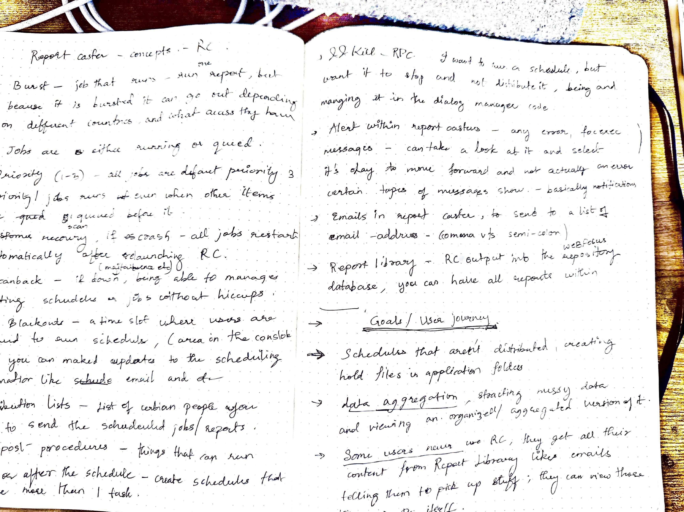
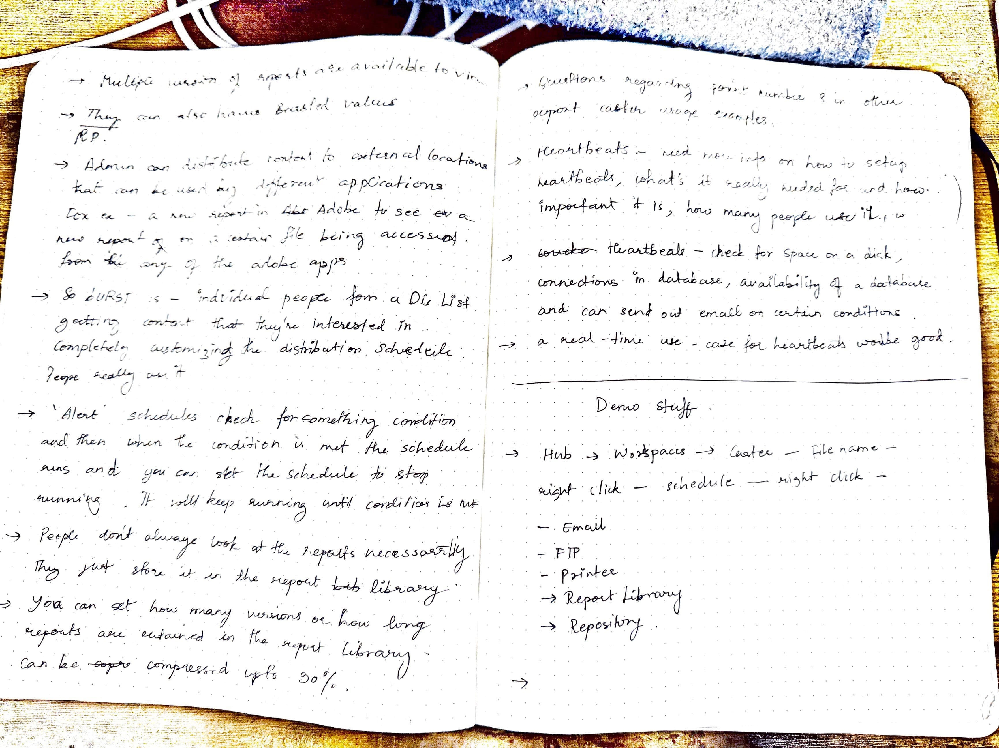
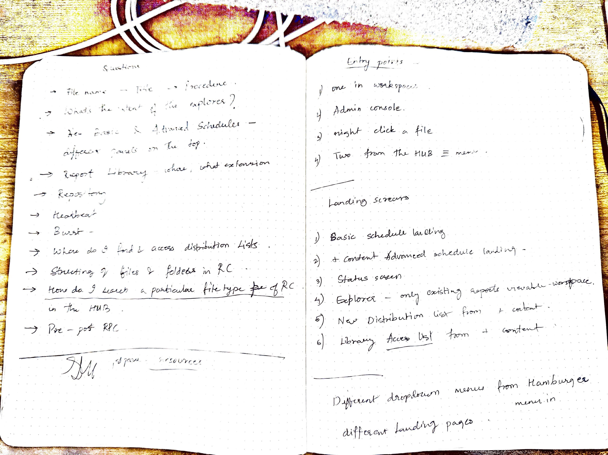
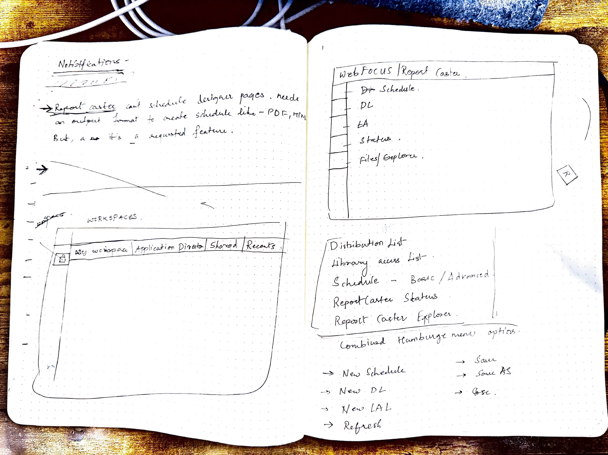
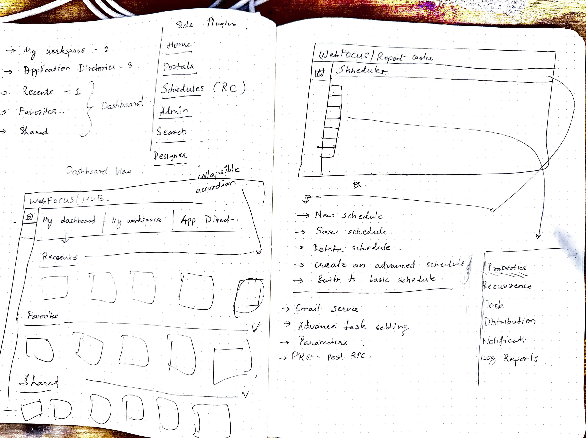
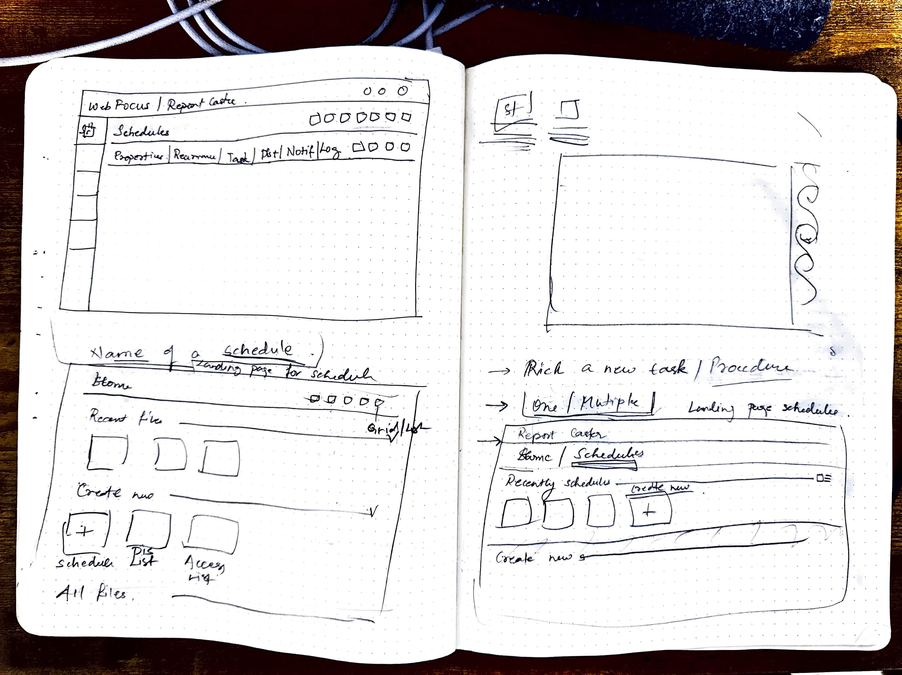
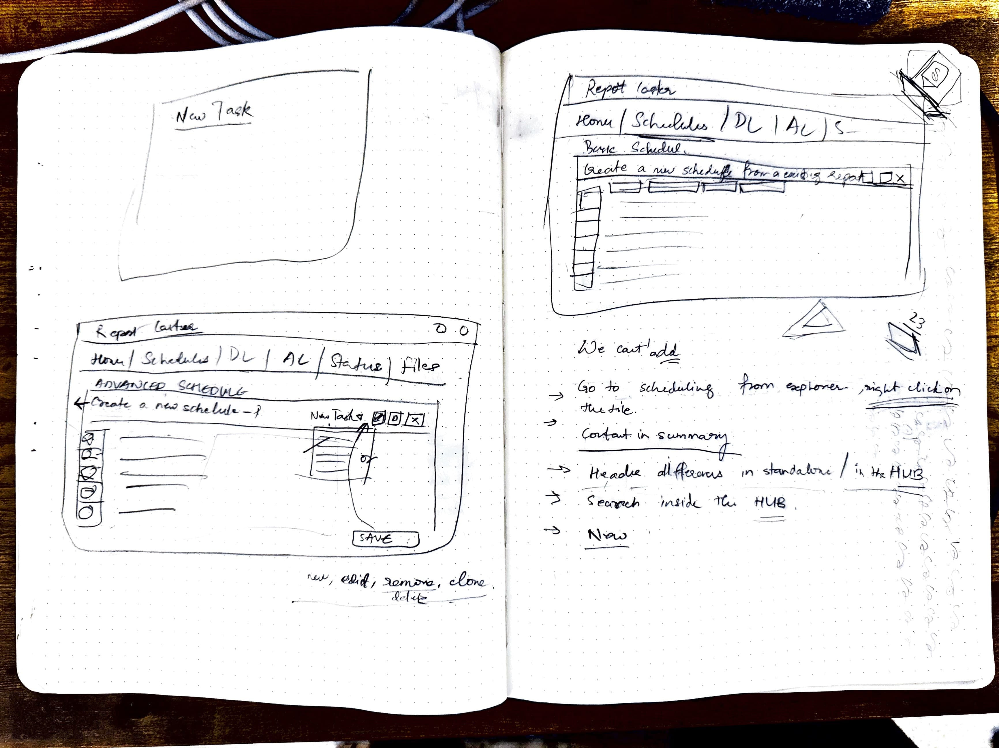

Quick Impact Overview
Leadership Summary: This project had been waiting in the pipeline when I joined — I volunteered to take it on. Over 14 months, I mapped the entire system, defined the UX architecture, and built the foundation that two designers later built upon.
What The System Was: A 50-year-old scheduling engine powering 20M+ weekly jobs. It worked — but it was undocumented, fragmented across five subsystems, and ready for modernization.
My Role: I owned this end-to-end: from research and system documentation, through architecture and design, to team handoff.
STAR Summary
Situation: A 50-year-old scheduling system with five fragmented subsystems and no documentation. It powered 20M+ weekly schedules but needed modernization.
Task: Modernize the system while preserving what worked. Document what had never been documented.
Action: Volunteered for the project. Embedded myself in support calls to understand real pain points. Explored three architectural directions before finding the right approach.
Result: Integrated five subsystems into the Hub — no extra space, smart integration. Reduced schedule creation from 4 clicks to 2. Shipped April 2024.
Key Achievements
- 5 subsystems → 1 Hub (smart integration)
- 4 clicks → 2 clicks for schedule/list creation
- 2 clicks → 1 click for Explorer access
- 20M+ weekly schedules impacted
- 3 architectural directions before finding the right approach
- Shipped April 2024 — live in production
UX Principles Applied
- Cognitive Load Reduction
- Unified Mental Model
- User Control & Freedom
- Match System to Real World
- Progressive Disclosure
- Error Prevention
Validation & External Links
Discover Deeply: Documenting the Undocumented
Summary: Uncovered 5 hidden subsystems and a lack of documentation. Mapped the entire ecosystem to create the first "mental model" in 50 years.
Full Detail
My first step was "System Archaeology." I took hundreds of screenshots, interviewed the support team, and sat down with the original engineers.


// SYSTEM_MAPPING_BREAKDOWN
What I Mapped: The Complete System
The system was vast and undocumented. To understand it, I broke it down into three core categories:
-
1. WORKFLOWS & NAVIGATION (//)
- → Every scheduling workflow: From creation to distribution to monitoring.
- → Every entry point: Where users could access RC features (inconsistent).
- → Every branching path: Understanding when users saw what, and why.
-
2. SYSTEM CAPABILITIES ({ })
- → Every admin capability: Permissions, settings, server config.
- → Every explorer interaction: How users filtered and viewed schedules.
-
3. RELIABILITY & LOGIC (⚠️)
- → Failure & recovery rules: Critical for enterprise reliability.
- → Burst/blockout logic: Undocumented rules users relied on.
> undocumented_rules_identified: 12+
> knowledge_transfer_status: COMPLETE
I utilized this map to propose the V1, V2, and V3 architectures.

The resulting "System Map" — the first visual documentation of the entire ReportCaster ecosystem.
Summary: Built relationships with support lead and team. Gained access to private internal tickets and historical insights. Anchored redesign on pain customers actually voiced.
Full Detail
Enterprise security policies blocked direct access to end users. No interviews, no usability tests, no direct feedback loops. This is the reality of B2B enterprise design—you often can't talk to the people using your product.
I found another way. I embedded myself in support calls, built relationships with the support lead, and gained access to years of internal tickets. I discovered that users were hacking the UI just to get their jobs done—creating workarounds for problems the system was never designed to solve.
// PROCESS_ARTIFACTS: THE_SKETCHBOOK

Making notes: Deconstructing the fragmentation.

Mapping journeys: Tracing complex user paths.

Pain points: Documenting friction and dead-ends.

Reimagining RC: Brainstorming the + menu concept.

Simplifying rules: Sketches on logic simplification.

Unifying workflows: Exploring list unification.

Visualizing UI: Early sketches of the unified version.
Simplify the Workflow: From 9 Clicks to 4
Summary: Reduced 5+ disparate subsystems into one unified, modal-based workflow. No new tabs. No context switching.
Full Detail
The goal was radical simplification. I moved from a "tools-based" architecture (Distribution tool, Access tool, Scheduling tool) to a "task-based" architecture (Create a Schedule).
After accepting the project, I faced the reality: there was no onboarding, no spec, no design file, no historical rationale. Just: "Here's the sandbox. Figure it out."
This became a detective story. I pieced together the system from fragments: hundreds of screenshots, support tickets, and conversations.
// CORE_WORKFLOW: SCHEDULE_CREATION
Entry Point: 5+ Clicks → 2 Clicks
Getting to the schedule dialog used to require 5+ clicks and opening a new browser tab. The new unified modal is accessible in 2 clicks directly from the Hub.
- 1. Go into Hub
- 2. Navigate to workspaces
- 3. Click plus content button
- 4. Drill down context menu
- 5. Select create schedule
- Opens in NEW TAB ↗
- 1. + Menu → Create Schedule
- 2. Configure in Modal
- Zero context switching
Key Redesign: Natural Language Recurrence
The legacy recurrence UI was a 30-year-old relic — confusing checkbox mazes and obscure terminology. I redesigned it with a natural language summary that tells users exactly what they've scheduled in plain English.
Example: "Runs Monday to Friday at 6:00 PM, recurring every week."

Redesigned Recurrence: Note the plain English summary at the top.
Iterate with Inclusion: Three Architectural Approaches
Summary: Three directions before finding the right one. Each rejection taught me something about platform constraints.
Full Detail
After mapping the system and identifying the five subsystems (Schedules, Distribution Lists, Access Lists, Explorer, Admin), I explored three architectural directions before finding the solution that balanced everything.
V1: Independent Product → Rejected. "Leadership wants all workflows centralized in the hub."
V2: Hub Plugin → Rejected. "Too much engineering effort this year."
V3: Modal-based Architecture → Shipped. Platform-native design that worked within existing code.
Each rejection taught me something different about platform constraints, user needs, and engineering realities.
Version 1: Independent Product
I designed V1 as a standalone product matching existing platform patterns — dedicated scheduling, explorer, and admin in one place.
Rejected: "Leadership wants all workflows centralized in the hub." Fair constraint. I moved on.


Version 2: Plugin Integration
I built a hub-friendly plugin with integrated navigation and consolidated subsystems. This was my favorite version.
Rejected: "Too much engineering effort this year." Different constraint — resourcing, not strategy. Two rejections. Time to reframe from scratch.


.png)

Version 3: The Breakthrough (Platform-native Design)
Reframed: "How does the platform WANT workflows to behave?" Every major workflow starts in the + menu. That's platform architecture, not just UI.
Aha moment: If RC is a creation workflow, why not initiate from + menu? Modals worked within legacy FOCUS code without a rewrite. Constraint became advantage.
Final solution: Scheduling → modals from + menu. Explorer → filtered view in Home. Admin → management center.
Schedule Dialog
Unified schedule creation — all properties in one modal. From 9 clicks to 4.


The new unified modal handles properties, tasks, and logs in one view.
Recurrence Redesign
Natural language summaries instead of cryptic settings. "Every recurrence configuration now generates a human-readable sentence."


Distribution List
Streamlined member management with built-in search.


Access List
Permission management integrated into the workflow.


RC Explorer
Unified asset management with consistent filtering.


RC Admin
System status and health monitoring.
.png)
Grow Through Constraints: Aligning the Team Within the Ecosystem
Summary: Owned three major projects simultaneously. Onboarded 2 designers and remained the knowledge hub.
Full Detail
I was redesigning ML Functions and IQ Plugin simultaneously — three major enterprise systems at once. This taught me to prioritize ruthlessly: architecture first, polish second.
I onboarded 2 designers mid-project and remained the knowledge hub even after transitioning. The team could execute because they understood the "why" behind every decision.
Navigate Forward: Shipping Impact and Reflection
Summary: Requested: visual refresh. Delivered: foundational system architecture.
Full Detail
The request was for a visual refresh. I delivered a foundational system architecture. What started as "make it look better" became "document, unify, and future-proof a 50-year-old system."
What shipped (April 2024):
• 5 subsystems → 1 unified mental model
• 4 → 2 clicks for schedule/list creation
• 2 → 1 click for Explorer access
• Live in production, featured in public demos
What I'd do differently:
• Push harder for direct user research earlier — even in enterprise, there are ways
• Document architectural decisions in real-time, not retrospectively
• Build design system components as I go, not after
The architecture I created became the reference pattern for other modernization projects in the org.
Transformation in Motion
Comparing the legacy workflow vs the new unified ecosystem.
Before: Legacy RC Workflow

Five disconnected subsystems. Hidden functionality. 4 clicks to create a schedule.
After: New Unified Workflow

Unified modal-based workflow. 2 clicks to create. Smart Hub integration.
Design System & Component Library
Shared Architecture: A unified design system used across all three case studies to ensure consistency and speed.